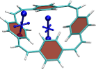
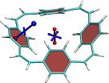
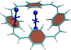

Analysis of chemical shielding¶
TheoDORE provides functionalities to analyse chemical shielding tensors and, in particular their use to analyze aromaticity.
Visualisation of chemical shielding tensors (VIST)¶
The VIST method [Eur. J. Org. Chem., (2021)] allows to visualise chemical shielding tensors in the context of the molecular structure showing local variations of the shielding along with its anisotropy. The method proceeds in the following order
- Computation of shielding tensors (at the moment only Gaussian is interfaced)
- Creation of VIST input via
theodore plot_vist - Rendering of VIST plot in VMD
The tools have only been recently developed and still might require a bit of manual tuning of script files by the user. Any feedback on the user-friendliness of the tools is appreciated.
Command line options¶
Run theodore plot_vist -h to see all command line options
plot_VIST.py [options] <logfile1> <logfile2>
Command line options:
-h, -H, --help: print this help
-v, --vist : VIST for only these dummy atoms, e.g. -v '0 3 5'
-o : Name of output file (for VMD)
-s, --scale : Scale factor VIST dumb-bells
-c, --coor : Create coordinate files (using cclib)
-p : Render and plot all tensors separately
Simple example¶
Create a Gaussian input file for an NMR calculation with the positions of the shielding tensors indicated as dummy (Bq) atoms and run Gaussian.
# PBE1PBE/Def2SVP scf=tight nmr
Shielding tensors
0 1
C 0.00000 1.20802 0.69749
C 0.00000 1.20802 -0.69749
C 0.00000 -0.00000 -1.39501
C -0.00000 -1.20802 -0.69749
C -0.00000 -1.20802 0.69749
C -0.00000 -0.00000 1.39501
H 0.00000 2.15464 -1.24395
H -0.00000 2.15464 1.24395
H -0.00000 -2.15464 -1.24395
H 0.00000 -0.00000 -2.48803
H -0.00000 -0.00000 2.48803
H -0.00000 -2.15464 1.24395
Bq 0.0 0.0 0.0
Bq 1.0 0.0 0.0
Bq 2.0 0.0 0.0
After the job finishes simply run (assuming you named the output file gaussian.log)
plot_VIST.py gaussian.log
Open a molecular coordinate file in VMD. Then from inside VMD click: File - Load Visualization State - VIST.vmd
In the first instance, this will plot the shielding tensors of all Bq positions on top of each other.
Use, the -p option to plot them all individually or use the -v option to select individual tensors.
Processing several output files¶
In many cases, it is desirable to process several output files at the same time to produce a consistent representation of several output files, for example to represent the shielding in different electronic states. The following figures represent the shielding in the dication, neutral state, and dianion of a macrocycle.
  This figure was created with the command
theodore plot_vist -c -v '0 4' */gaussian.log
The -c option specifies that the molecular coordinates are directly parsed from the log-file. -v 0 4 indicates that only the Bq atoms with index 0 and 4 are included in the representation. */gaussian.log indicates that the gaussian.log files in all subdirectories are processed.
The files are loaded into VMD via
vmd -e VIST.vmd
Initially all geometries are superposed on top of each other. To hide some of the molecules use the D option (part of T A D F Molecule) in the VMD Main menu.